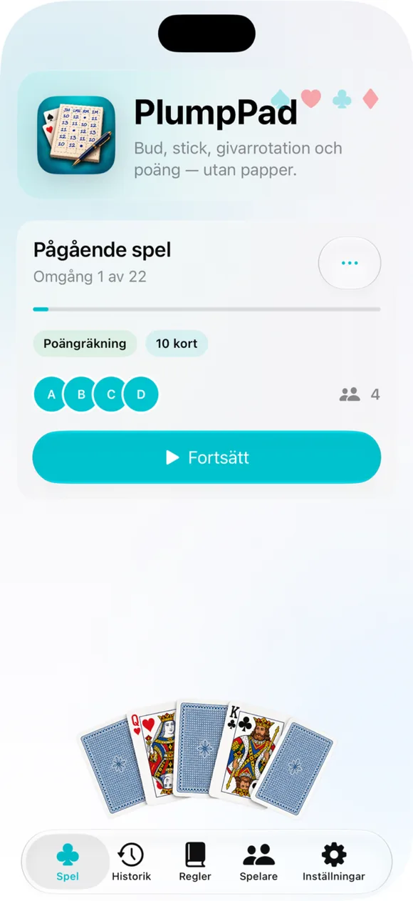
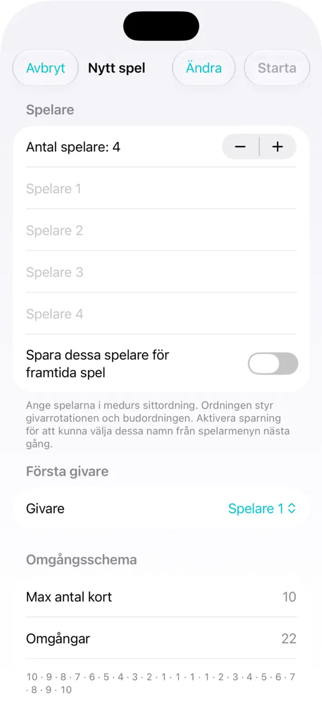
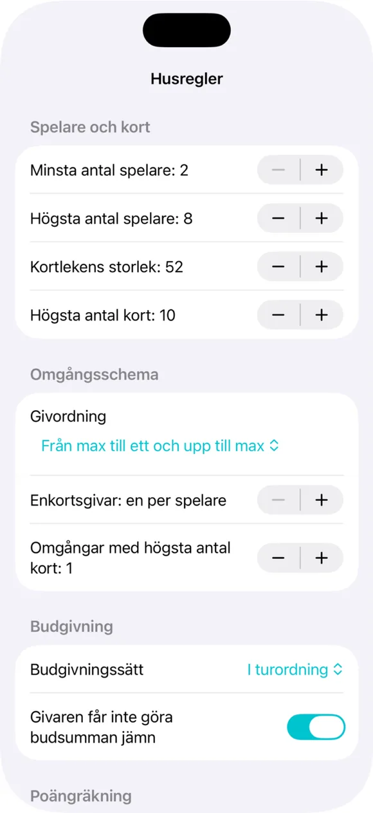
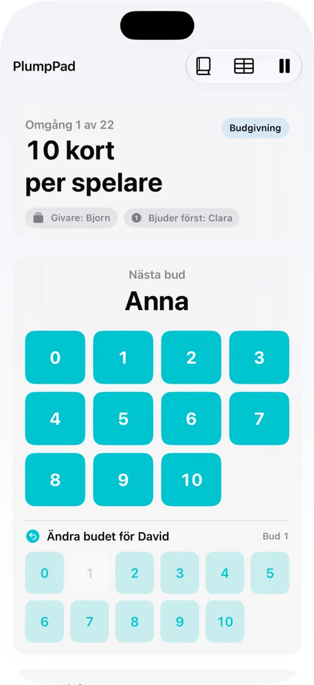
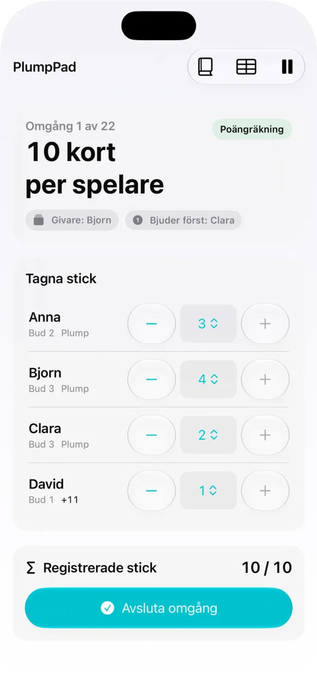
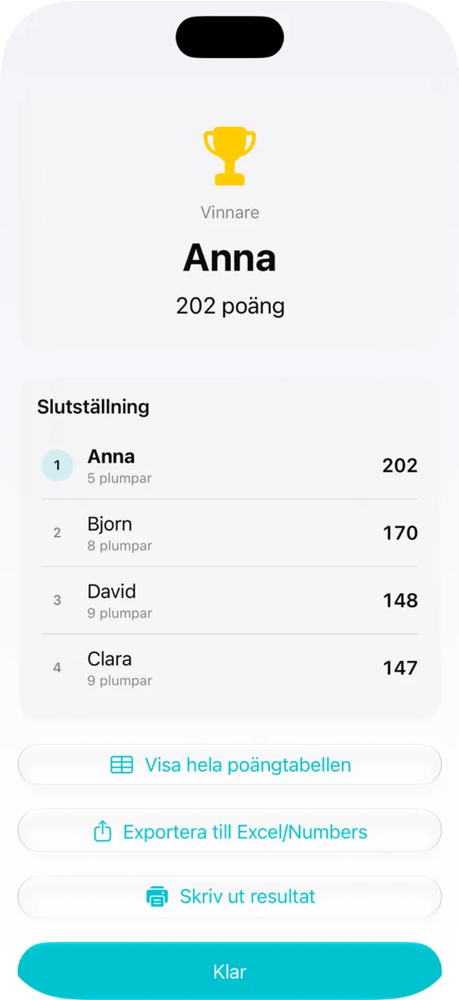
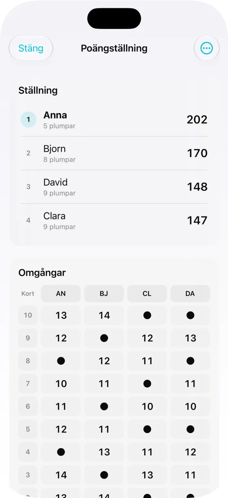
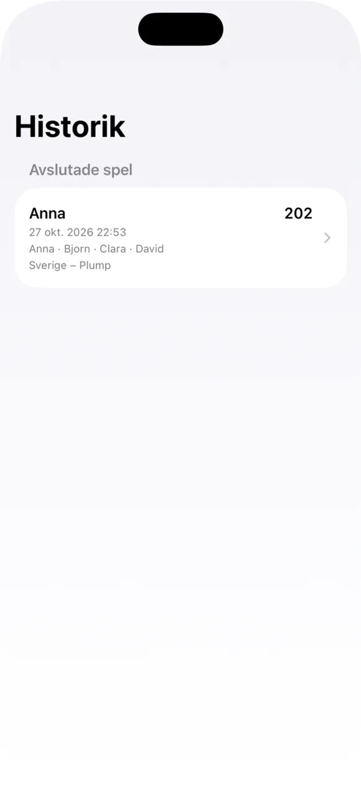

Välj regelvariant
Välj bland 12 förinställda profiler, bland annat svensk Plump, Oh Hell och Piratbridge.
PlumpPad sköter bud, stick och resultat vid kortbordet. Välj mellan tolv färdiga regelvarianter eller anpassa era egna husregler.
Fysiska kort, digital poängföring. Regelprofilen väljs innan ett nytt parti startas.
Välj bland 12 förinställda profiler, bland annat svensk Plump, Oh Hell och Piratbridge.
Anpassa givschema, kortlek, antal spelare, budspärr och poängmodell. Spara uppsättningen för nästa parti.
Appen visar givare och nästa budgivare. Sista budet begränsas när den valda regeluppsättningen kräver det.
Registrera tagna stick med plus/minus eller valmeny. Poängen räknas enligt vald regeluppsättning.
Pågående partier lagras på enheten; sparade spelare och valfri resultathistorik finns kvar.
Skriv ut PDF i A4/Letter eller exportera ett resultat som CSV för exempelvis Numbers och Excel.
Håll skärmen vaken under spel och välj automatisk nedtoning vid inaktivitet.
Appens gränssnitt finns på 12 språk och följer språkvalet i iOS.
Skärmbilder från appversionen som ligger till grund för denna webbplats, inklusive de nya inställningarna för husregler.







